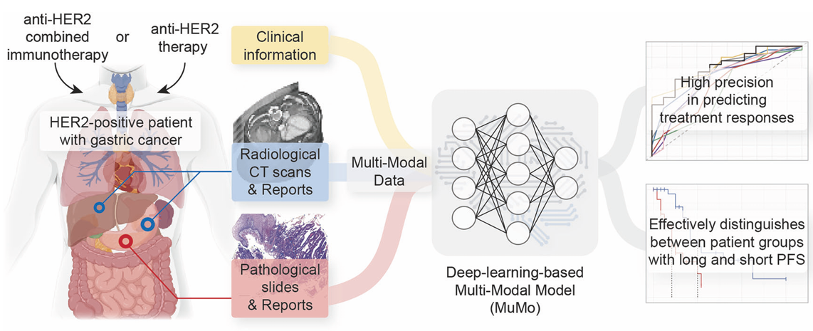
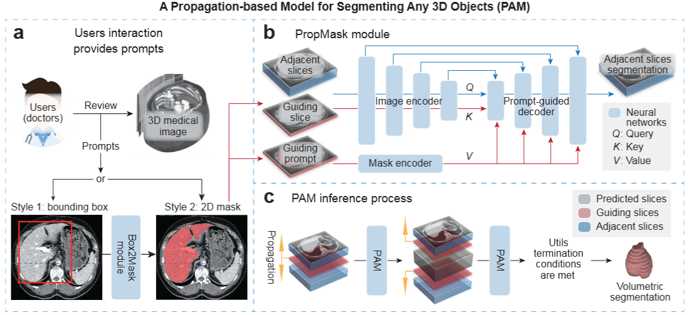

|
Zifan Chen
I am currently a postdoctoral researcher at the Center for Machine Learning Research (CMLR), Peking University,
working under the collaboration of Dr. Li Zhang,
Prof. Bin Dong,
and Prof. Weinan E.
Previously, I obtained my Ph.D. in Data Science from Peking University, advised by Prof. Bin Dong.
I received my B.Eng. in Computer Science and Technology from the School of Information Science and Engineering at Hunan University, under the supervision of Prof. Chao Yang.
Email /
Google Scholar /
GitHub /
CV /
Blog
|
|
|
Research
My research focuses on multimodal and cross-scale medical AI, particularly in clinical tasks related to treatment response and prognosis prediction for cancer patients.
|
|

|
Predicting gastric cancer response to anti-HER2 therapy or anti-HER2 combined immunotherapy based on multi-modal data
Zifan Chen#, Yang Chen#, Yu Sun#, Lei Tang#, Li Zhang, Yajie Hu, Meng He, Zhiwei Li, Siyuan Cheng, Jiajia Yuan, Zhenghang Wang, Yakun Wang, Jie Zhao, Jifang Gong, Liying Zhao, Baoshan Cao, Guoxin Li, Xiaotian Zhang, Bin Dong, Lin Shen.
Signal Transduction and Targeted Therapy (IF: 40.8), 2024
|
|

|
PAM: A Propagation-Based Model for Segmenting Any 3D Objects across Multi-Modal Medical Images
Zifan Chen#, Xinyu Nan#, Jiazheng Li#, Jie Zhao, Haifeng Li, Ziling Lin, Haoshen Li, Heyun Chen, Yiting Liu, Lei Tang, Li Zhang, Bin Dong
arXiv, 2025
|
|
{kind=link}